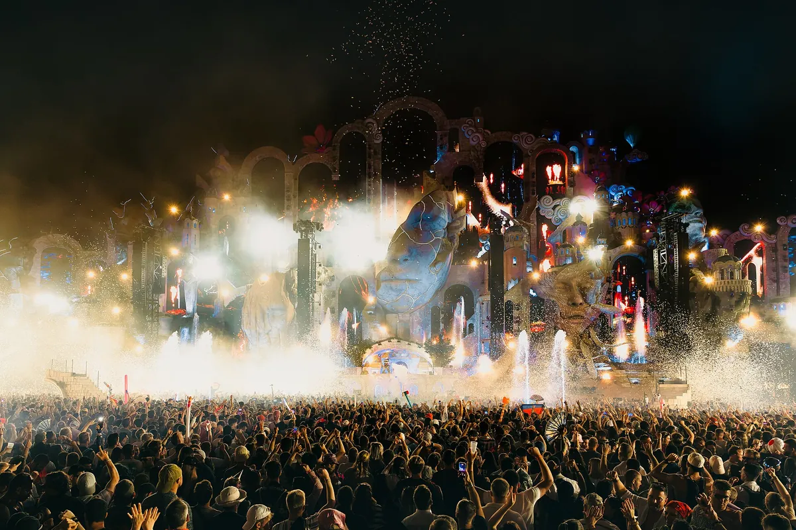
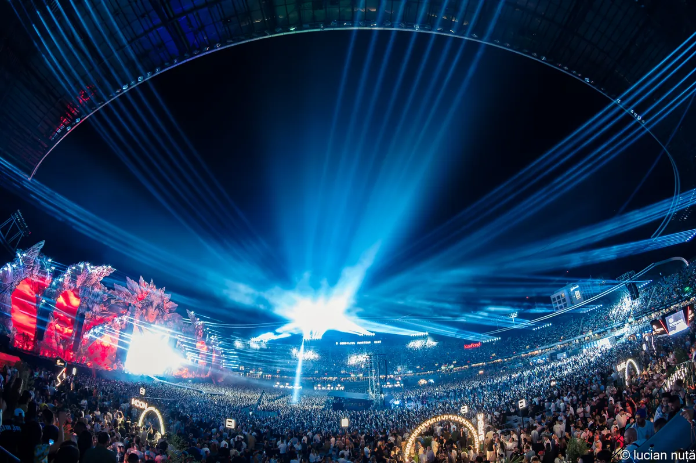
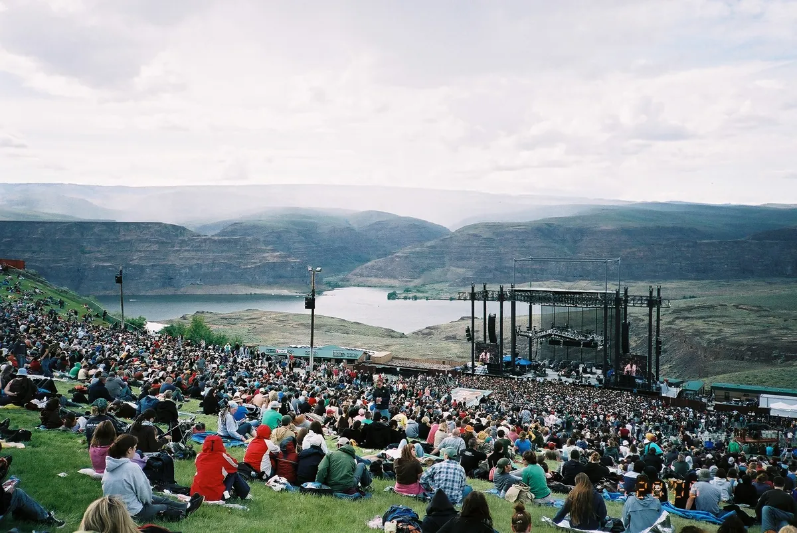
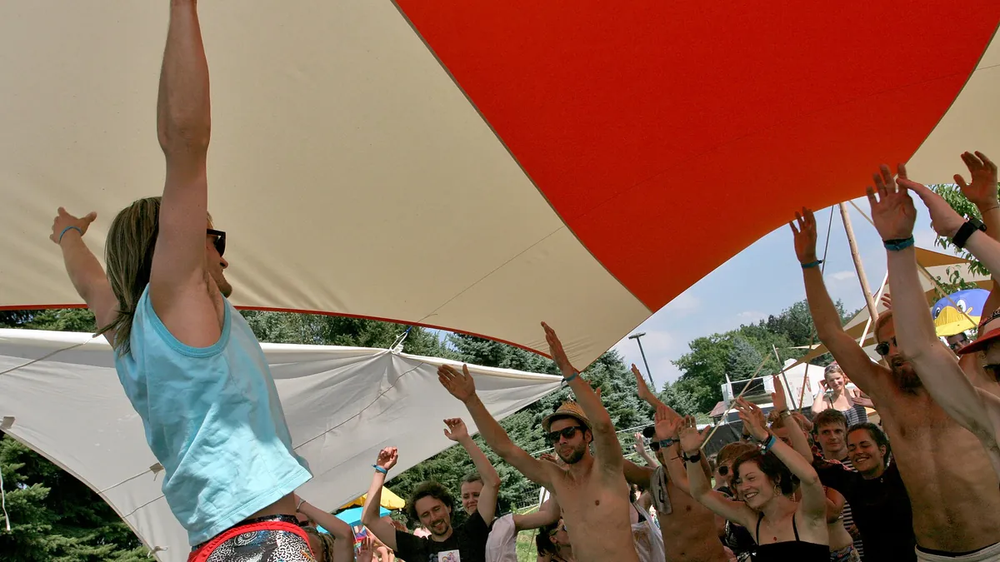

Festival guide, summer 2027
The best summer EDM and electronic music festivals of 2027
Summer electronic music festivals in Europe and the US, from the big stages to the small underground weekends in forests and campgrounds, with the 2027 dates that are confirmed and the ones that are not.
Two kinds of summer.
Summer is when most of the world's electronic music festivals happen, and it covers two very different kinds of weekend. One is the big stage: Tomorrowland, Untold, Creamfields, Beyond Wonderland at the Gorge, built for tens of thousands of people and booked months ahead. The other is a few thousand people in a forest, a holiday village or a campground, with no main stage and often no line-up posted until the gates open.
Both kinds are here, in Europe and in the US, for June, July and August 2027. Many of the best summer music festivals are rock and pop with a dance tent; every festival here has electronic music at its core.
EDM here means what it means in the US: the commercial big-stage sound. The underground festivals further down are electronic music festivals, and their crowds would not call them EDM.
Dates are marked as confirmed only when the festival's own site gives them. Where only ticket sites or listings give a date, it says so, and where nothing is published yet, the table gives last year's dates instead.
How this list was chosen.
The summer EDM music festivals in the first section are the big-stage ones; every festival here had to meet three conditions: a 2027 edition held between June and August, electronic music as the main programme, and either a long record or a reputation among people who go to a lot of festivals. Size was not a condition: NACHTI sells about 3,000 tickets.
The underground festivals are harder to check, so each one here is covered by Resident Advisor or a comparable music press outlet, or by the festival's own published history. Festivals that are paused, or that fall in May or September, are listed at the end with the reason.
Line-ups, prices and set times are left out. They change every year, and the festival's own site has the current ones.
Summer festival dates for 2027 at a glance.
| Festival | Where | 2027 dates | Sound | Scale | Best for |
|---|---|---|---|---|---|
| Kala | Dhërmi, Albania | 2 to 9 June | Electronic | Small, hotel included | A beach week |
| Gottwood | Anglesey, Wales | Reported 10 to 13 June | Electronic | About 5,000 | A woodland weekend |
| Waking Life | Crato, Portugal | Not announced (16 to 22 June in 2026) | Electronic | Small, non-profit | The solstice week |
| Sónar | Barcelona, Spain | 17 to 19 June | Electronic, experimental | About 150,000 in 2026 | A city festival |
| Defqon.1 | Biddinghuizen, Netherlands | 24 to 27 June | Hardstyle, hard dance | Large camping, sold out | Hard dance |
| Beyond Wonderland at the Gorge | George, Washington | 25 to 27 June | Big-stage EDM | Large camping | A big US weekend |
| Tec-Troit | Detroit, Michigan | Listed 25 to 27 June | Detroit techno | Free, all ages | Detroit artists |
| Electric Forest | Rothbury, Michigan | Not announced (25 to 28 June in 2026) | EDM | Large camping | The forest at night |
| Kappa FuturFestival | Turin, Italy | 2 to 4 July | Techno, house | Large | Techno in a city park |
| Awakenings | Hilvarenbeek, Netherlands | 9 to 11 July | Techno | Large | Techno all weekend |
| Ultra Europe | Split, Croatia | 9 to 11 July | Big-stage EDM | Large | A coast holiday |
| Bass Coast | Merritt, BC, Canada | 9 to 12 July | Bass music, electronic | Five stages, 150+ artists | An independent campout |
| Freerotation | Clyro, Wales | Not announced (10 to 12 July in 2026) | Electronic | Members only | Those who know a member |
| Tomorrowland | Boom, Belgium | Not announced (two weekends in July) | Big-stage EDM | About 400,000 in 2026 | The spectacle |
| Dirtybird Campout | Piercy, California | Listed 15 to 18 July | House | Campground | A playful house weekend |
| Parookaville | Weeze, Germany | 16 to 18 July | Big-stage EDM | About 75,000 a day | A festival town |
| The Great Beyond | Minnesota | Not announced (24 to 26 July in 2026) | Psychedelic techno | Small campout | An underground US campout |
| Garbicz | Garbicz, Poland | Listed 29 July to 2 August | Electronic | About 11,000 | A forest by a lake |
| Dekmantel | Amsterdam, Netherlands | 29 July to 2 August | House, techno, disco | Large | Deep booking |
| NACHTI | Olganitz, Germany | 30 July to 1 August | Electronic | About 3,000 | A small lakeside weekend |
| HARD Summer | Inglewood, California | Not announced (1 to 2 August in 2026) | EDM | Large | Los Angeles |
| Houghton | Norfolk, England | 5 to 8 August | House, techno, electronic | About 10,000 | Long sets, all night |
| Untold | Cluj-Napoca, Romania | 5 to 8 August | Big-stage EDM | Large, four nights | A big stage in a city |
| Elements | Long Pond, Pennsylvania | Listed 6 to 8 August | House, techno | Large camping | House and techno in the US |
| Field Maneuvers | Norfolk, England | 20 to 22 August | Electronic | Small | A secret site |
| Creamfields | Daresbury, England | 26 to 29 August | Big-stage EDM | About 80,000 | The end of the British summer |
What are the biggest summer EDM festivals?
The best summer EDM festivals by attendance are in Europe: Tomorrowland in Belgium, Untold in Romania, Creamfields in England and Parookaville in Germany. Of the EDM festivals 2027 brings to Europe, all but Tomorrowland have firm dates. In the US, the summer's large weekends are Beyond Wonderland at the Gorge, Electric Forest and HARD Summer.
Tomorrowland, Belgium
Tomorrowland is held over two weekends in July in a park at Boom, between Antwerp and Brussels, and drew about 400,000 people across both weekends in 2026.

Its main stage is rebuilt every year around a new theme, and it is the one festival on this list that people plan a year in advance and fly in for. Tomorrowland has not announced its 2027 dates yet; it usually does in the winter.
Untold, Romania
Untold fills Cluj Arena and the park around it in Cluj-Napoca, in Transylvania, for four nights. Untold 2027 is on 5 to 8 August. It is the big-stage festival of eastern Europe, built inside a football stadium and the park beside it.

Parookaville, Germany
Parookaville builds a festival town on a former airbase at Weeze, near the Dutch border, and holds about 75,000 people a day. The 2027 edition runs from 16 to 18 July. Most people camp.
Creamfields, England
Creamfields has been held at Daresbury in Cheshire for most of its history and takes around 80,000 people. Creamfields 2027 is on 26 to 29 August, over the bank holiday weekend, which makes it the last big festival of the British summer.
Ultra Europe, Croatia
Ultra Europe is the July edition of the Miami festival, held in Split on 9 to 11 July 2027. People usually combine it with time on the Croatian coast.
Beyond Wonderland at the Gorge, Washington
Insomniac's Beyond Wonderland takes over the Gorge Amphitheatre, a concert venue above the Columbia River in central Washington, on 25 to 27 June 2027, with camping on the site. It is the summer's big-stage weekend in the Pacific Northwest.

Electric Forest, Michigan
Electric Forest is held in the woods at Rothbury, Michigan, and is known as much for the forest itself, lit up at night, as for the stages. The 2026 edition ran from 25 to 28 June. The 2027 dates have not been announced.
HARD Summer, California
HARD Summer is the Los Angeles festival of the season, held at Hollywood Park in Inglewood. In 2026 it ran on 1 and 2 August. The 2027 dates have not been announced.
Defqon.1, the Netherlands
For hard dance, Defqon.1 is held at Biddinghuizen on 24 to 27 June 2027. Its site shows 2027 tickets as sold out.
House and techno in summer.
Some of the best house and techno weekends of the year are in the summer, and none of them is small.
Awakenings, the Netherlands
Awakenings runs its summer festival at Hilvarenbeek, in the south of the Netherlands, on 9 to 11 July 2027. It is a techno festival from the first stage to the last.
Dekmantel, the Netherlands
Dekmantel has held its main weekend in the Amsterdamse Bos, the woodland park on the edge of Amsterdam, since 2013, with the first days in venues around the city. Its booking covers house, techno, disco and the more unusual edges of all three, and its stages are spread out between the trees. Dekmantel 2027 runs from 29 July to 2 August.
Kappa FuturFestival, Italy
Kappa FuturFestival is held in Parco Dora, a park built on old industrial land in Turin. The 2027 edition is on 2 to 4 July, and you sleep in the city.
Sónar, Spain
Sónar has been held in Barcelona since 1994, with a daytime programme and a night programme, and drew about 150,000 people in 2026. Sónar 2027 is on 17 to 19 June, at the very start of the summer.
Elements, Pennsylvania
Elements grew out of the Brooklyn party scene and now holds a camping festival at Pocono Raceway in Long Pond, Pennsylvania. It sits between the big US weekends and the underground ones: large names, but a house and techno crowd. Listings give 6 to 8 August 2027; in 2026 it ran from 7 to 9 August.
Underground summer festivals in Europe.
The best-known small festival in Europe is Garbicz, and most of the other summer electronic music festivals in this section get compared to it. What they share is a cap on numbers, a site in the country, camping, long sets and line-ups that matter less than the place.
Garbicz, Poland
Garbicz is held in a forest beside a lake in western Poland, about ninety minutes' drive from Berlin, and a lot of its crowd comes from that city. It was started in 2013 by people from Bar25, Holzmarkt and the Bachstelzen collective, and has grown from about 900 people in its first year to about 11,000, according to its founder Juval Dieziger in 2026. The 2026 edition ran from 30 July to 3 August. Listings give 29 July to 2 August 2027, not yet confirmed by the festival.
NACHTI, Germany
NACHTI, known for most of its history as Nachtdigital, has been held since 1998 at a holiday bungalow village at Olganitz, near Leipzig. It sells about 3,000 tickets. NACHTI 2027 runs from 30 July to 1 August.

Houghton, England
Houghton is held in the grounds of Houghton Hall in Norfolk and curated by the DJ Craig Richards. Since 2017 it has had a licence for music around the clock, so the sets run long and some of the best happen when other festivals have closed. It holds about 10,000 people. Houghton 2027 is on 5 to 8 August.
Field Maneuvers, England
Field Maneuvers is a small camping weekend somewhere in Norfolk. The exact site is sent only to ticket holders. Field Maneuvers 2027 is on 20 to 22 August.
Freerotation, Wales
Freerotation is the hardest festival on this list to get into. It is held at Baskerville Hall in Clyro, just over the Welsh border from Hay-on-Wye, is run by a group around the DJs Steevio and Suzybee, and tickets go only to members. The 2026 edition was on 10 to 12 July. The 2027 dates have not been announced.
Gottwood, Wales
Gottwood is held on the Carreglwyd Estate on Anglesey, in north Wales, and is capped at about 5,000 people. It has been reported for 10 to 13 June 2027, one of the first small festivals of the summer.
Waking Life, Portugal
Waking Life is a gathering of about six days around the summer solstice in the Alentejo countryside near Crato, run by a non-profit association. In 2026 it ran from 16 to 22 June. The 2027 dates have not been announced.
Kala, Albania
Kala takes over the beach at Dhërmi on the Albanian coast for a week, with a ticket that includes a hotel. Kala 2027 runs from 2 to 9 June. It is the choice for a small festival and a beach holiday in one booking.
Underground summer festivals in the US.
The US has fewer of these than Europe, and they are harder to find, because most never advertise outside their own scene. The summer rave festivals below are the ones with a record behind them.
The Great Beyond, Minnesota
The Great Beyond is a techno campout in rural Minnesota, at the Minnesota River Valley Sanctuary and Retreat. It started in 2021 and is run by the DJ Dustin Zahn with Steve and Jasmine Seuling of the Intellephunk collective. In 2026 it ran from 24 to 26 July, with fewer stages and shorter walks between them than before, which the organisers described to Resident Advisor as a tighter, communal experience. The 2027 dates have not been announced.
Tec-Troit, Michigan
Tec-Troit is a free, all-ages festival in Detroit, funded by donations. Raul Rocha, who DJs as DJ Roach, started it in 2011 in a tent in Harmonie Park, and it still books mostly Detroit artists, with workshops alongside the music. It moved from August to June, and in 2026 ran from 26 to 28 June. Listings give 25 to 27 June 2027, not yet confirmed by the festival.
Dirtybird Campout, California
The Dirtybird label's summer camping festival now runs with Northern Nights at Cook's Valley Campground in Piercy, on the Eel River in northern California. It is a house weekend with a sense of humour. Listings give 15 to 18 July 2027, not yet confirmed by the festival.
Bass Coast, just over the border
Bass Coast is in Canada, but it belongs with this group. It is independent and owned by artists, held at Merritt in British Columbia, with five stages and more than 150 artists. Bass Coast 2027 runs from 9 to 12 July. More on it in the guide to Canadian festivals.
Not on this list, and why.
- Desert Hearts, the Californian house and techno campout, took 2026 off and has not said whether it returns in 2027.
- Fusion, in northern Germany, has no 2027 edition. It returns on 28 June to 2 July 2028.
- Movement in Detroit and Lightning in a Bottle in California are both in May, before the summer. See the guide to Movement.
- Burning Man starts at the end of August and runs into September, and is not a music festival in the sense of the rest of this list. See what Burning Man is.
- Deep Tropics in Nashville is held over Labor Day weekend, in September.
- Unknown Perception, the 350-person techno campout in southern California, is listed by Resident Advisor for 16 to 18 April 2027, before the summer.
- Draaimolen in the Netherlands and Meakusma in Belgium are both in September.
How to choose.
If you want the spectacle, Tomorrowland is still the one to see once, and Untold, on firm dates, is the large festival you can book now. In the US, Beyond Wonderland at the Gorge has the best setting of the big weekends.
If you want house and techno, Dekmantel and Awakenings are the two biggest weekends, in July and early August, and Sónar is the city option in June.
If the crowds at the big festivals put you off, the underground lists are where to look. In Europe, Garbicz and NACHTI are the two most people start with; Houghton is for long sets, and Freerotation is for when you know a member. In the US, The Great Beyond is the closest thing to Garbicz, and Tec-Troit is free.
For the wider picture, see the guides to electronic music festivals in Europe, EDM festivals in the US and techno festivals.
Summer festivals FAQ.
What are the best EDM festivals this summer?
Untold in Romania (5 to 8 August) and Creamfields in England (26 to 29 August) are the large ones with firm dates, then Beyond Wonderland at the Gorge in Washington (25 to 27 June). Tomorrowland has not announced 2027. Away from EDM, the underground choices are Garbicz in Poland, NACHTI in Germany (30 July to 1 August) and The Great Beyond in Minnesota.
What are the biggest summer music festivals?
Among electronic festivals, Tomorrowland is the biggest, with about 400,000 people over two weekends in 2026, followed by Untold, Creamfields and Parookaville. Sónar drew about 150,000 in 2026.
What are the major EDM festivals in the US?
In summer, Beyond Wonderland at the Gorge, Electric Forest and HARD Summer. Across the whole year the list is longer, with EDC Las Vegas in May and Ultra in Miami in March; the guide to US EDM festivals covers them all.
Are there festivals like Garbicz in the US?
A few. The Great Beyond in Minnesota is a small campout with no big stage show. Bass Coast, just over the border in British Columbia, is bigger but independent and artist-owned.
When are the summer festival dates for 2027 announced?
Most festivals announce the next year's dates during or soon after the current edition. Tomorrowland usually announces in the winter. Of the festivals here, Electric Forest, HARD Summer, Freerotation, Waking Life and The Great Beyond had not announced 2027 dates on 10 November 2026.
Sources.
- 2027 dates and history from each festival's own site: Tomorrowland, Awakenings, Kappa FuturFestival, Dekmantel, Defqon.1, Beyond Wonderland at the Gorge, Electric Forest, HARD Summer, NACHTI, Houghton, Field Maneuvers, Waking Life, Bass Coast, Northern Nights.
- Untold, Parookaville, Creamfields, Ultra Europe and Sónar: this site's guide to each festival, linked above, which cites its own sources.
- The Great Beyond: Resident Advisor. Unknown Perception's 2027 date: Resident Advisor listing.
- Listed dates, not yet confirmed by the festival: Techno Airlines (Garbicz) and ticket listings (Elements, Tec-Troit, Dirtybird Campout).
- Poll rank and context: DJ Mag: Top 100 Festivals 2026.
Continue reading
Read next.
 Festivals~6 min read
Festivals~6 min readBest New Year's Eve Festivals 2026 into 2027
Countdown NYE, Decadence, HiJinx, Rhythm and Vines and Awakenings: the best New Year's Eve festivals for dance music in 2026, with dates and where they are.
Read article → Festivals~7 min read
Festivals~7 min readSziget Festival 2027: Dates, Music, Camping and Travel
Five days on Óbuda Island, with pop, rock and hip-hop beside club stages, theatre, circus and a rail link into Budapest.
Read article → Festivals~7 min read
Festivals~7 min readMonegros Desert Festival 2027: Date, History and Guide
One long electronic event on exposed land near Fraga, with roots in Florida 135 and stages running through the night.
Read article → Festivals~14 min read
Festivals~14 min readBest Electronic Music Festivals in Europe 2027, Compared
Fourteen major festivals and seven smaller ones, from Tomorrowland to Garbicz, compared by sound, scale, setting and 2027 dates.
Read article →Want something to play while you read? Let the Selector pick a DJ set.